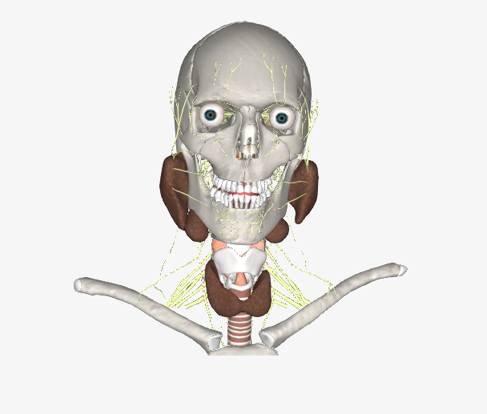
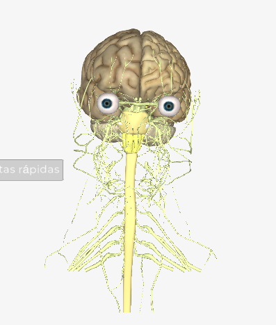
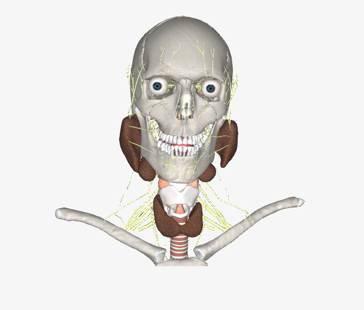
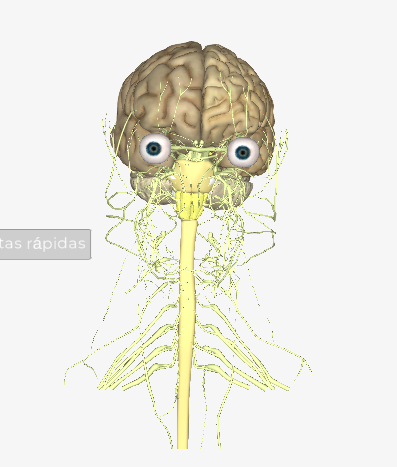

componente práctico
Escenarios simulados con apoyo de tecnologías de información y comunicación
En el programa el aprendizaje práctico se desarrolla a través del uso de herramientas informáticas, que se apoyan en: tecnología de punta, software especializado, simuladores y laboratorios virtuales, entre otros. Operando en línea o por descarga. Además, es importante decir que las prácticas simuladas son aquellas que se desarrollan a través del uso de herramientas de soporte lógico, aplicaciones o simuladores. Acercando de este modo al estudiante a escenarios o situaciones reales, de conformidad con la naturaleza de la formación disciplinar de acuerdo con el documento. (UNAD, VIACI, lineamientos académicos para el desarrollo del componente práctico 2015).
De acuerdo con lo anterior, a continuación, se describen los E- medios con los que cuenta el programa.
Simuladores/Software
En la actualidad el escenario simulado con apoyo de tecnología y comunicación del programa está constituido por objetos informacionales, aplicativos y simuladores y se encuentra articulado a los cursos académicos, los cuales se describen a continuación:Simulador Virtual BiotK
Simulador que corresponde a un atlas de anatomía en 3D interactivo y realista donde se puede explorar el funcionamiento del cuerpo humano. Implementa tecnologías computacionales de visualización que están a la vanguardia mundial para permitir realizar disecciones del cuerpo humano desde un PC o un laptop. En las figuras 1,2 y 3, que se presentan a continuación se muestra un ejemplo de la manera cómo se visualiza la BiotK en el campus virtual. Los órganos de la BiotK han sido procesados directamente de imágenes diagnósticas y de crio seccionamiento de un cadáver, razón por la cual son 100% reales en forma y ubicación.
Figura 1. Simulador BiotK vista frontal.
.png) 



Fuente: Simulador BiotK. Programa de Psicología 2023.
Figura 2. Simulador BiotK vista transversal del cerebro
Fuente: Simulador BiotK. Programa de Psicología 2014.
De acuerdo con su funcionalidad, permite la flexibilidad en la programación de los ejercicios, con lo cual es posible ajustar o programar cada software de acuerdo con los objetivos de aprendizaje. Por ejemplo, es posible seleccionar una lección determinada, establecer el nivel de dificultad, configurar la modalidad de instrucción (verbal o escrita), escoger el tipo de estímulo (figuras, letras, números, etc.), ofrecer pistas multimodales (texto, imágenes, sonido), y establecer un orden aleatorio o rígido en el orden de presentación de los estímulos, lo que posibilita un rango amplio de beneficios para el
proceso formativo de los estudiantes del programa y entre los cuales se encuentra:
De acuerdo con su funcionalidad, permite la flexibilidad en la programación de los ejercicios, con lo cual es posible ajustar o programar cada software de acuerdo con los objetivos de aprendizaje. Por ejemplo, es posible seleccionar una lección determinada, establecer el nivel de dificultad, configurar la modalidad de instrucción (verbal o escrita), escoger el tipo de estímulo (figuras, letras, números, etc.), ofrecer pistas multimodales (texto, imágenes, sonido), y establecer un orden aleatorio o rígido en el orden de presentación de los estímulos, lo que posibilita un rango amplio de beneficios para el proceso formativo de los estudiantes del programa y entre los cuales se encuentra:
- Generar mayor atención, motivación y participación de los estudiantes, ya que cuenta con 1400 fotografías de alta resolución, permite la exploración en tres planos y le permite nombrar estructuras anatómicas sobre las imágenes.
- Facilitar el cumplimiento de los logros educativos a través de la interacción tridimensional con los diferentes órganos y/o sistemas sin límite de espacio, la exploración de imágenes, láminas y videos complementarios.
- Presentar un banco de imágenes de corteza a color de alta resolución Resonancia magnética (RMN) y Tomografía axial computarizada (TAC), con más de 700 tomografías y de 1050 imágenes de resonancia en los tres planos. (UNAD, ECSAH, Componente práctico 2017, p. 72)
- Conocer el reporte de rendimiento al final de una lección, en términos de: nombre de usuario, tipo de ejercicio, número de ejercicios, aciertos y errores y tiempo promedio de respuesta.
Así, la finalidad del simulador es poder reconocer al ser humano desde una concepción biopsicosocial para favorecer a través de acciones articuladas y contextualizadas las necesidades y demandas que desde éste surgen, puesto que facilita el cumplimiento de los logros educativos a través de la interacción tridimensional con los diferentes órganos y/o sistemas sin límite de espacio, la exploración de imágenes, láminas y videos complementarios.
De esta manera, facilita el estudio de la composición interna de cada una de las partes del cuerpo humano, identificando los sistemas implicados en los procesos de desarrollo habituales y comportamentales del individuo.
Tabla 4. Descripción de cursos académicos del simulador BiotK programa Res. 12986
Cursos académicos
Propósito formativo
Psicofisiología (402537626)
Reconocer y comprender los fundamentos biológicos del comportamiento humano, así como la relación estructural y funcional de diferentes sistemas del organismo con el sistema nervioso central y los procesos psicológicos básicos.
Neuropsicología (402537522)
Comprender la interacción de las bases neuropsicológicas del comportamiento humano, a través del análisis de problemáticas y fenómenos sociales buscando aportar desde el curso al bienestar de individuos y comunidades.
Psicobiología (402537621)
Conocer la perspectiva biológica del comportamiento humano, identificando las bases biológicas y los procesos involucrados en el mismo, para comprender la relación del comportamiento humano en función de sus características, desde lo biológico, psicológico y social; en pro de la salud física y mental a nivel individual como comunitaria.
Fuente: Elaboración propia, UNAD-ECSAH-Psicología, 2021.
Simulador PSYSIM 2.O:
Fuente: Elaboración propia, UNAD-ECSAH-Psicología, 2021
El simulador virtual Psysim se constituye en un aplicativo que permite en los estudiantes, el desarrollo de competencias en el saber hacer que fortalezcan el proceso del aprendizaje, a través del análisis de la realidad social en los diversos contextos mediante la estrategia de aprendizaje basado en estudio de caso.
Este simulador favorece la construcción de competencias para la evaluación, diagnóstico e intervención a través del análisis de casos en diversos contextos, por lo que se encuentra habilitado en los cursos de acción psicosocial que son obligatorios en el plan de estudios resolución 3443, los cuales se describen en la Tabla 5:
Tabla 5. Descripción de cursos académicos simulador Psysim Res. 12986.
Cursos académicos
Propósito formativo
Acción psicosocial y trabajo - 403031
Comprender los elementos teóricos y metodológicos de la acción psicosocial en los escenarios de trabajo para generar reflexiones sobre las dinámicas y los fenómenos presentes en las organizaciones, en pro de potenciar la eficiencia, productividad y actuación del psicólogo en este contexto.
Acción psicosocial y contexto jurídico - 403030
Conocer los principales conceptos de la psicología jurídica, así como también, la relación de la psicología y el derecho como ciencias sociales que confluyen en el estudio del comportamiento humano que se encuentra regulado por las normas. De igual manera, conocer los campos de aplicación que se vinculan con la acción psicosocial con el fin principal de poder implementar estrategias y acciones de acompañamiento que parten de unas necesidades del contexto, contribuyendo a la reparación y exigibilidad del restablecimiento de los derechos humanos que hayan podido ser vulnerados.
Acción psicosocial y educación - 403026
Comprender los elementos teóricos y metodológicos del rol del psicólogo en el contexto educativo, que permita reflexiones para construir con la comunidad educativa acciones psicosociales éticas tendientes al fortalecimiento de los procesos educativos y al bienestar de los sujetos involucrados.
Acción psicosocial y salud - 402537524
Que el estudiante esté en la capacidad de Identificar el rol del Psicólogo en el contexto de la salud; con el fin de diseñar y desarrollar acciones contextualizadas y orientadas a promover estilos de vida saludable en sujetos y colectivos, en el marco de la promoción y la prevención en salud; desde un enfoque biopsicosocial y con argumentación desde los Modelos en Salud.
Acción psicosocial y familia - 403027
Reconocer los factores sociales, internos y externos que afectan la dinámica familiar, por medio del acercamiento a situaciones reales para así comprender el entorno en que están inmerso los miembros que la conforman y de esta forma promover la creación de acciones psicosociales enfocadas a la mejora de la calidad de vida familiar, basándose en el enfoque sistémico y enmarcadas en el manejo ético el psicólogo.
Fuente: Elaboración propia, UNAD-ECSAH-Psicología, 2021
El aplicativo proporciona al estudiante cuatro etapas de interacción, en cuatro ambientes gráficos diferentes: simulado, interacción con pares, cámara de Gessell y evaluación.
En el ambiente Simulado el estudiante interactúa con un modelo de caso o consulta. Esta interfaz presenta múltiples herramientas para interactuar con el caso seleccionado que se denomina “El modelo”. Las herramientas se presentan de forma simultánea y se encuentran disponibles para el estudiante en todo momento durante la etapa. El estudiante debe decidir cuáles herramientas aplicar y en qué momento las aplica sin intervención del sistema o modelo.
Estas herramientas están divididas en tres categorías principales; en primer lugar, de intervención, las que intervienen en el modelo, es decir, que a medida que el estudiante hace uso de ellas, el modelo cambia (su parametrización varía). En segundo lugar, las herramientas que retornan información, ya sea de forma pasiva, como los recursos bibliográficos y otros, y las que entregan información activa, que provienen del registro de la actividad del estudiante o de los cambios en la parametrización del modelo. En tercer lugar, las herramientas de seguimiento para el estudiante, que le permiten al usuario del sistema hacer anotación o registrar sus observaciones.
La herramienta, de intervención, pretende simular la conversación que un consultante hace con el psicólogo. Tiene las siguientes características:
- Gráficamente presenta al usuario un personaje (o grupo) animado, con las características físicas definidas en “el modelo”. Estas características están definidas de acuerdo con el rol que juega el consultante: individuos de una comunidad, personal de una institución educativa, personal directivo o trabajadores de una compañía, consultante individual para terapia clínica, etc. Este personaje retorna las respuestas a las preguntas realizadas por el estudiante de forma oral, es decir mediante el uso de locución. También las presenta de forma escrita, para facilitar la accesibilidad.
- Presenta una lista de preguntas, de donde el usuario selecciona la que desea efectuar al consultante. Esta lista de preguntas está agrupada en categorías y es alterada dinámicamente por las preguntas efectuadas por el estudiante durante la sesión, así como por los factores contingentes y las demás herramientas que intervienen en el modelo.
Gráficamente, la interfaz presenta la lista de herramientas (botones, o menús) y el estudiante puede seleccionar una de ellas. A continuación, se le presenta la herramienta, que incluye la información completa sobre ella y los documentos que sean pertinentes. Se le da la oportunidad al estudiante de aplicarla o cancelar la acción. Luego de aplicar la herramienta, (sobre el modelo), el estudiante visualiza inmediatamente los resultados de la aplicación. Estos resultados se pueden observar de nuevo por medio de las herramientas de seguimiento al proceso clínico.
CÁMARA DE GESELL
Fuente: Elaboración propia, UNAD-ECSAH-Psicología, 2021
La implementación del simulador de cámara de Gesell virtual busca el fortalecimiento de las competencias profesionales, a través del desarrollo de ejercicios de entrenamiento disciplinares, prácticos e investigativos en diferentes cursos de la ruta formativa, articulando el modelo pedagógico Unadista con el ejercicio virtual, remoto de manera sincrónica y asincrónica para los estudiantes de todo el país.
Fuente: Elaboración propia, UNAD-ECSAH-Psicología, 2021
Su objetivo es promover las competencias profesionales, a través del desarrollo de ejercicios de entrenamiento disciplinares, prácticos e investigativos en cursos como Acción psicosocial en psicología clínica y de la salud, y Aplicación de evaluación en psicología, articulando el modelo pedagógico unadista a través del ejercicio virtual de manera sincrónica y asincrónica para los estudiantes, apoyado en los procesos de aprendizaje y entrenamiento de habilidades propias de la evaluación psicológica.
El simulador de Cámara de Gesell, mediante el acompañamiento sincrónico y asincrónico aporta a la adquisición de competencias del saber-hacer en los estudiantes, favoreciendo la integración del conocimiento teórico y práctico. Es considerada desde su origen como dispositivo de
experimentación en ambientes controlados, que ha permitido el desarrollo de procesos de investigación y práctica en diferentes campos de la psicología, útiles al estudio, investigación e intervención de diversos fenómenos, posibilitando los procesos de aprendizaje, a partir de las experiencias simuladas o reales, de acuerdo con los propósitos formativos de los cursos en los que se emplee.
En esta vía, se proyecta que el uso del simulador de Cámara de Gesell se convierta en una herramienta que apoye los procesos de aprendizaje y entrenamiento en habilidades propias de la evaluación psicológica.
El comprender estos escenarios a nivel físico y evolucionar a una versión simulada de los mismos, implica procesos de intersubjetividad, virtualidad, inmersión y personificación al igual que espacios que recrean las posiciones de (sala de entrevistado) y (sala de observación), propiciando que el proceso sea viable y confiable siguiendo una rigurosa praxis, ética y epistemología coherente a la necesidad planteada. Son valiosos los aportes formativos que pueden brindarse a través del uso de esta estrategia, en términos de observación, análisis, y retroalimentación, con el fin de afinar las habilidades de los profesionales en evaluación y abordaje de problemáticas psicosociales que se tejen en los diferentes campos.
PRUEBAS DIGITALES. 4 (BFQ2 - LA PRUEBA TOM- MAGELLANO)
En el marco de un convenio de investigación con la UNAD con la dirección nacional de psicología, Giunti Psychometrics Colombia propone un proyecto de investigación en acompañamiento del Departamento de Investigación y Desarrollo. La aplicación de la prueba BFQ-2, cuestionario Big Five – BFQ -2: evalúa la personalidad y 28 competencias articuladas en la medición de cinco grandes factores de personalidad (o Big Five), prueba autoadministrada que puede ser contestada directamente desde el computador personal.
Fuente: Elaboración propia, UNAD-ECSAH-Psicología, 2021
MAGELLANO Batería de Orientación Profesional
Es una batería de pruebas para elegir el camino de la educación superior (Universidad y Educación Técnica Superior) que proporciona un análisis completo de las variables necesarias para acceder a estudios superiores; tales como intereses, actitudes, motivación, etc. Además de tener un valor formativo, estimula a los estudiantes a una reflexión en torno a su decisión y a la vez sobre sus competencias personales, sus propias fortalezas y sobre aquellas competencias que deben ser desarrolladas. Ofrece al orientador y al docente la posibilidad de planificar un plan de orientación para los distintos itinerarios de educación superior, extendido a la clase o a toda la escuela, integrando el uso de la batería con entrevistas individuales, reuniones con trabajadores universitarios y profesionales y jornadas informativas. El estudiante, después de indicar su elección de una lista de posibles trayectorias de educación superior, responde las preguntas del examen. Las respuestas brindadas son analizadas mediante procedimientos computarizados que permiten, de manera segura y rápida, la elaboración y construcción de un perfil de orientación individual.
Fuente: Elaboración propia, UNAD-ECSAH-Psicología, 2021
La batería se divide en cinco pruebas:
- La primera prueba, de 145 ítems, destaca los intereses profesionales del alumno, refiriéndolo a los distintos caminos, pensados como el acceso al mundo laboral.
- Los 35 ítems de la segunda prueba revelan los intereses culturales del alumno, no necesariamente coincidentes con los profesionales, pero importantes si se comparan con la flexibilidad y movilidad que requiere el mundo laboral.
- Las 105 preguntas de la tercera prueba (cronometrada) evalúan por un lado el factor g (inteligencia general), entendido como la capacidad de pensar y razonar independientemente de las características del material a afrontar, y por otro lado algunas habilidades fundamentales específicas: capacidad de razonamiento verbal, numérico, abstracto, espacial, mecánico, comprensión de pasajes y fluidez cognitiva.
- La cuarta prueba reporta 85 afirmaciones sobre las formas en que el alumno aborda el estudio, sus estrategias de aprendizaje y, en definitiva, la motivación real para emprender un camino universitario.
- La última prueba, dividida en 35 ítems, detecta la forma en que el alumno es capaz de afrontar y resolver problemas, la percepción de su capacidad para superar obstáculos y controlar emociones y conductas en situaciones difíciles (problema- resolución).
Fuente: Elaboración propia, UNAD-ECSAH-Psicología, 2021
DISPOSITIVO EDUCATIVO: NEUROFEEDBACK
Fuente: Elaboración propia, UNAD-ECSAH-Psicología, 2021
El neurofeedback es una técnica de intervención clínica que a través de equipos y software de medición fisiológica brindan a los pacientes información en tiempo real acerca de su sistema nervioso, ayudándoles a tomar conciencia de este, a regular su actividad eléctrica y sus funciones fisiológicas. Son tecnologías que, a través de luz, sonido, electricidad, magnetismo y biofotomodulación estimulan el sistema nervioso central generando un mejor funcionamiento. Es un tipo de neuroterapia, es decir, un tratamiento que busca modificar la función cerebral actuando de modo directo sobre ésta, se plantea desde la relación cerebro-máquina, y no aborda los procesos psicológicos en sí mismos, sino el estado neuròbiologico subyacente.